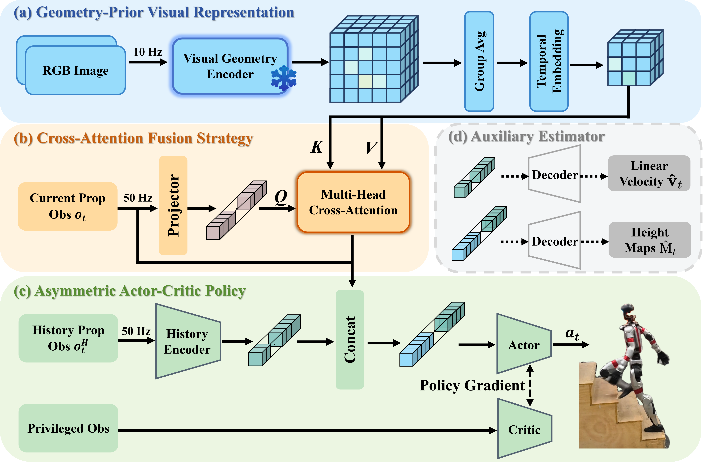

The prevailing paradigm of perceptive humanoid locomotion relies heavily on active depth sensors. However, this depth-centric approach fundamentally discards the rich semantic and dense appearance cues of the visual world, severing low-level control from the high-level reasoning essential for general embodied intelligence. While monocular RGB offers a ubiquitous, information-dense alternative, end-to-end reinforcement learning from raw 2D pixels suffers from extreme sample inefficiency and catastrophic sim-to-real collapse due to the inherent loss of geometric scale. To break this deadlock, we propose GeoLoco, a purely RGB-driven locomotion framework that conceptualizes monocular images as high-dimensional 3D latent representations by harnessing the powerful geometric priors of a frozen, scale-aware Visual Foundation Model (VFM). Rather than naive feature concatenation, we design a proprioceptive-query multi-head cross-attention mechanism that dynamically attends to task-critical topological features conditioned on the robot's real-time gait phase. Crucially, to prevent the policy from overfitting to superficial textures, we introduce a dual-head auxiliary learning scheme. This explicit regularization forces the high-dimensional latent space to strictly align with the physical terrain geometry, ensuring robust zero-shot sim-to-real transfer. Trained exclusively in simulation, GeoLoco achieves robust zero-shot transfer to the Unitree G1 humanoid and successfully negotiates challenging terrains.

@article{liu2026geoloco,
title={GeoLoco: Leveraging 3D Geometric Priors from Visual Foundation Model for Robust RGB-Only Humanoid Locomotion},
author={Yufei Liu, Xieyuanli Chen, Hainan Pan, Chenghao Shi, Yanjie Chen, Kaihong Huang, Zhiwen Zeng, Huimin Lu},
year={2026},
journal={arXiv preprint arXiv:2603.07624},
}